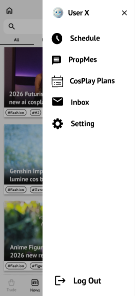

Task Flows & Wireframes
CoNews covers 5 key user tasks identified from user research and the refined MVP strategy.
Task 1 — Discover & Purchase Event Ticket
The primary entry-to-completion flow: user browses the CoNews feed, selects an event, views full details, and purchases a ticket — all within PropBank.

Design Decision — Task 1: Inline Ticket Purchase
The ticket purchase flow is handled entirely within PropBank rather than redirecting to an external ticketing site. This decision was driven by the user research finding that fragmented platforms are the core pain point — redirecting users out of the app would recreate exactly the disconnected experience we are solving.
The flow keeps payment details minimal and shows a clear confirmation with the ticket automatically stored in the user's in-app Ticket Storage, so there is no friction in retrieving it at the event venue.
Task 2 — Event Direction & Event Layout Map

Design Decision — Direction & Event Map Gated Behind Ticket Purchase
The Event Direction and Event Map features are only surfaced after a user has purchased a ticket. Users who have not bought a ticket cannot access these screens.
Rationale — Separation of Concerns: The event detail page serves users at the decision stage — they are evaluating whether to attend. Loading this page with navigation and booth-layout tabs adds information that is entirely irrelevant until the user has committed to going. Showing these prematurely creates visual noise and cognitive overload without adding value.
Once a ticket is purchased, the event moves into the user's My Schedule page, where Direction and Event Map become available. This context switch is intentional: the user is now in preparation mode rather than discovery mode, and the information presented matches exactly what they need at that stage — making the app feel purposeful and uncluttered.
Task 3 — Look for Guests & Friends Associated with the Event

Design Decision — Guests & Friends Available Before Ticket Purchase
The Guests and Participate tabs are accessible directly from the event detail page — no ticket required. Users can see which influencers, vTubers, YouTubers, and content creators will be attending, and whether any of their PropBank friends have also indicated they are going.
Rationale: For many ACGN fans, the decision to attend an event is driven by who is going — a favourite creator on the guest list or a friend's attendance can be the deciding factor. Surfacing this information during the discovery phase, before any purchase commitment, directly supports the user's decision-making process.
This contrasts with Direction and Event Map, which are only unlocked post-purchase — those are preparation tools, not decision tools. Keeping Guests and Participate always visible ensures the event page remains a persuasive and informative browsing experience without overwhelming the user with post-commitment logistics.
Task 4 — Share Event with PropBank Friends / Other Applications

Design Decision — Share Available Before Ticket Purchase
The Share function is accessible from the event detail page without requiring a ticket purchase. Users can share directly to PropBank friends or to external applications such as WhatsApp and Telegram.
Rationale — Social Communication as a Decision Tool: Attending an ACGN event is often a group activity. A user who discovers an interesting event may want to consult friends before committing to a purchase. Making Share available pre-purchase enables this natural social flow — the user can forward the event, discuss it with friends, and collectively decide to go, rather than having to buy a ticket first before being able to share it.
This positions Share as both a communication tool and a conversion driver — a shared event link can bring new users into CoNews while also helping the original user make a more confident purchase decision alongside their social circle.
Task 5 — View Purchase Ticket & Set Reminder

Design Decision — Ticket & Reminder Centralised in My Schedule (Post-Purchase Only)
View Ticket and Set Reminder are only accessible after a ticket has been purchased. They are not exposed on the event detail page — instead, they live inside My Schedule, reached via the hamburger menu.
Rationale — Centralised Post-Purchase Hub: Once a user has committed to an event, their needs shift entirely to preparation and logistics. My Schedule acts as a single, dedicated space for all post-purchase activities — viewing the ticket, setting a reminder, checking directions, and viewing the event map. Grouping these together means users always know where to go after buying, reducing navigation friction and keeping the main event browsing experience uncluttered.
Placing Ticket and Reminder behind a purchase gate also keeps them meaningful — a reminder for an event you have not committed to attending has no practical value, and displaying a ticket that does not exist would be confusing. The gate ensures every item in My Schedule is actionable and relevant.
Design Iteration: Lo-Fi → Hi-Fi
Lo-Fi Wireframes
Initial wireframes focused on the core 3-screen flow: event listing → event detail → ticket purchase. Key decisions explored at this stage: filter bar placement, which action buttons to show on the event detail page, and the payment screen layout.
View Lo-Fi Wireframe in Figma ↗Key Changes from Lo-Fi → Hi-Fi
- Direction & Event Map gated behind ticket purchase. In the lo-fi, both features were accessible directly from the event detail page without any purchase requirement. After reviewing the design rationale, these were removed from the event detail page in the hi-fi and relocated to My Schedule — only appearing once the user has bought a ticket. This enforces the separation between pre-purchase decision-making and post-purchase preparation.
- Added onboarding and authentication screens. The hi-fi introduced a Landing Page, Login, Register, and Forgot Password screens. These are shared utility screens used across all PropBank services and were designed and owned by Xiao Ao as part of the group's shared infrastructure.
MS2 Feedback & Iteration
The TA raised two key issues with the lo-fi wireframes during the MS2 review:
- Information overload on the event page. The event detail page had too many buttons and too much text — including button labels that spelled out descriptions which were unnecessary. The lo-fi felt cluttered and overwhelming rather than focused.
- Unclear pre- vs post-purchase user journey. The TA questioned what actions a user could take before buying a ticket versus after — the lo-fi did not make this distinction clear, with features like Direction and Event Map shown regardless of purchase state.
Response: These two points directly shaped the hi-fi design. The event detail page was simplified — verbose button labels were removed and the layout was cleaned up. More importantly, a clear pre-purchase vs post-purchase workflow was established: Guests, Participate, and Share remain accessible before buying (decision-making tools), while Direction, Event Map, View Ticket, and Set Reminder are locked behind purchase and centralised in My Schedule (preparation tools). This split directly addresses the TA's question and gives the app a more purposeful, uncluttered structure.
Hi-Fidelity Prototype
The hi-fi prototype applies PropBank's shared design system (typography, colour tokens, navigation patterns) while reflecting CoNews-specific interaction needs.
View Hi-Fi Prototype in Figma ↗Key Screens



Usability Testing
A usability test was conducted using Maze with 8 participants to evaluate how easily users can complete key CoNews tasks on the hi-fidelity prototype. All 4 tasks achieved a 100% success rate with 0% drop-off, confirming that the core flows are learnable and navigable.
| Task | n | Avg. Time | Success | Misclick |
|---|---|---|---|---|
| Find, purchase a ticket, then view ticket in My Schedule | 8 | 26.7s | 100% | 23.1% |
| Find, purchase a ticket, then set reminder in My Schedule | 5 | 21.9s | 100% | 22.5% |
| Look for the Guests page on an event | 5 | 13.9s | 100% | 36.0% |
| Look for the Participants page on an event | 4 | 3.5s | 100% | 0.0% |
Key Findings
Purchase & Schedule Flow (Tasks 1–2)
Both tasks succeeded with 100% completion and similar misclick rates (~23%). Task 1 took longer (26.7s vs 21.9s) as it was participants' first exposure to the purchase flow. The consistent misclick rate across both tasks points to minor friction in the checkout or My Schedule navigation — likely users exploring tabs before finding the right action — rather than a fundamental usability issue.
Guests Page Discoverability (Task 3)
The Guests page had the highest misclick rate at 36%, indicating that users did not immediately know which tab or element to tap on the event detail page. Despite the exploration, all users eventually found it (100% success). This suggests the "Guests" label or its placement on the event page could be made more prominent to reduce scanning time.
Participants Page (Task 4)
The fastest and most precise task — completed in 3.5s with 0% misclick rate. Having already navigated the event detail page in Task 3, users immediately knew where to look. This transfer of learning suggests the event page tab structure is consistent and easy to internalise once encountered.
Overall
Across all 4 tasks: 100% success rate and 0% drop-off. The prototype successfully supports core user goals. The main area for improvement is the discoverability of the Guests tab on the event detail page, which could be addressed by surfacing it higher in the tab order or using a more descriptive label.